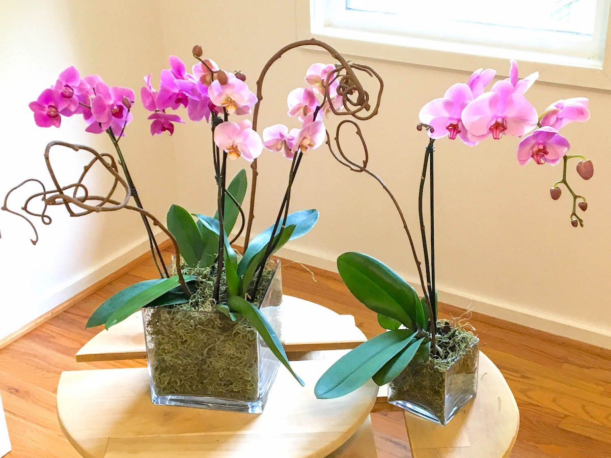

Fig.Orchids
Orchids are easily distinguished from other plants, as they share some very evident derived characteristics or synapomorphies. Among these are: bilateral symmetry of the flower (zygomorphism), many resupinate flowers, a nearly always highly modified petal (labellum), fused stamens and carpels, and extremely small seeds.
Orchids are primarily herbaceous (nonwoody), although some species may be vines, vinelike, or somewhat shrubby. They may be terrestrial or epiphytic. Orchid flowers vary tremendously in size from the minute flowers of some species of the genus Pleurothallis, which are no more than about 2 mm (0.1 inch) in diameter, to the large ones of Brassia, which may be more than 38 cm (15 inches) from the tips of the lateral sepals (petallike structures) to the tip of the dorsal sepal.